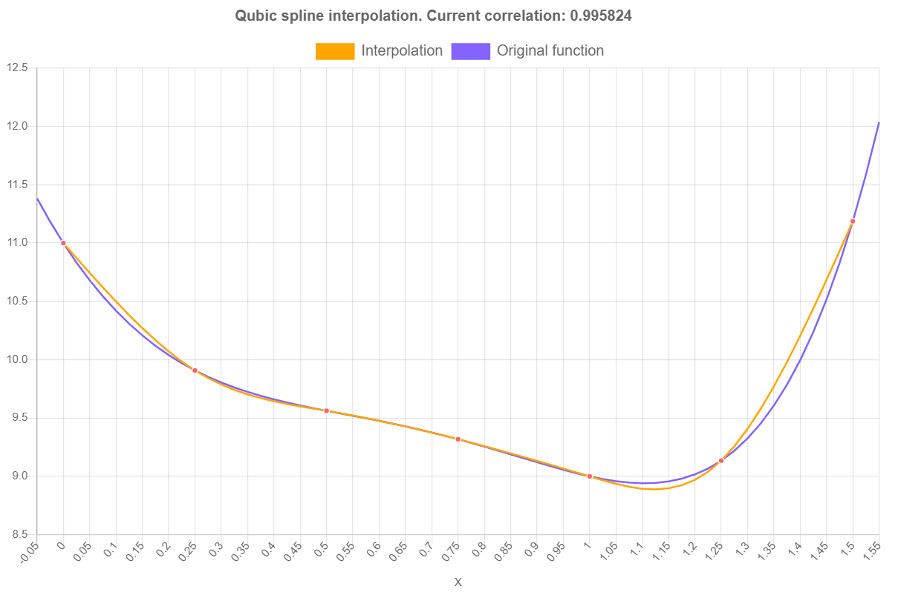
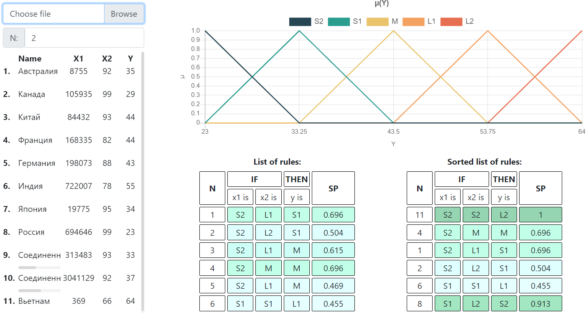
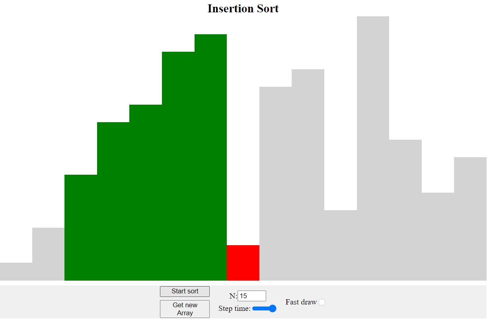
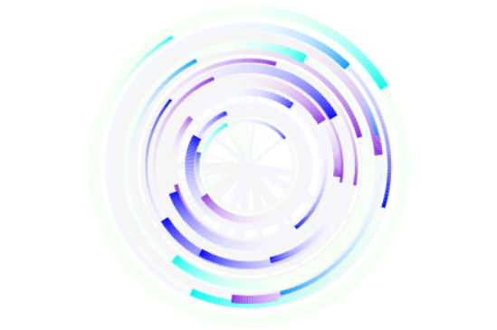
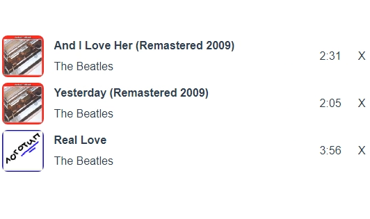

Добро пожаловать
Вы находитесь на личной странице разработчика Тимофеева Александра. Данная страница является приложением к резюме. Ниже можно ознакомиться с некоторыми моими проектами.
Мои проекты:

Интерполяция
сплайнами
Реализация метода сплайн интерполяции.
Проект сделан с использованием библиотек: bootstrap, Chart.js. Верстка адаптивная.
Реализация метода сплайн интерполяции.
Проект сделан с использованием библиотек: bootstrap, Chart.js. Верстка адаптивная.

Нечеткая система на основе численных
данных
Реализация метода Мамдани, обучающегося на входном датасете.
Проект написан на нативном js, без сборщиков. Здесь используется bootstrap, хотя почти вся адаптивность компонентов реализована на css grid (исключение - разметка первых потомков в main). Графики строятся библиотекой Chart.js. Обработка xlsx файлов производится библиотекой SheetJS.
Реализация метода Мамдани, обучающегося на входном датасете.
Проект написан на нативном js, без сборщиков. Здесь используется bootstrap, хотя почти вся адаптивность компонентов реализована на css grid (исключение - разметка первых потомков в main). Графики строятся библиотекой Chart.js. Обработка xlsx файлов производится библиотекой SheetJS.

Реализация алгоритма сортировки
вставками
В данном проекте был использован генератор для создания анимации на странице. Генератор обеспечивает синхронность выполнения: при вызове next() запускается соответствующий код перед yield. Данный подход позволил вызывать следующий шаг итерации спустя любой произвольный промежуток времени.
В данном проекте был использован генератор для создания анимации на странице. Генератор обеспечивает синхронность выполнения: при вызове next() запускается соответствующий код перед yield. Данный подход позволил вызывать следующий шаг итерации спустя любой произвольный промежуток времени.

Анмация вокруг курсора.
Первый опыт работы в canvas.
Первый опыт работы в canvas.

Компонент на
Vue
Компонент написан для совместного проекта на Vue. Представляет собой список с адаптивной версткой.
Собран при помощи vue-cli.
Компонент написан для совместного проекта на Vue. Представляет собой список с адаптивной версткой.
Собран при помощи vue-cli.
Back-end:
Сервер для личного
проекта
Бэкэнд на Node.js. Пока не запущен. API полностью готово, не хватает только клиентской части. По завершению, планируется размещение на heroku. Проект для отслеживания некоторых коммитов, создаваемых пользователем, и сбор по ним статистики: среднее число коммитов в год и месяц, периоды между коммитами и прочее.
Используются библиотеки: express.js (API), mongoose (работа с mongodb), dotenv (переменные окружения). Приложен .rest файл.
Бэкэнд на Node.js. Пока не запущен. API полностью готово, не хватает только клиентской части. По завершению, планируется размещение на heroku. Проект для отслеживания некоторых коммитов, создаваемых пользователем, и сбор по ним статистики: среднее число коммитов в год и месяц, периоды между коммитами и прочее.
Используются библиотеки: express.js (API), mongoose (работа с mongodb), dotenv (переменные окружения). Приложен .rest файл.
Сервер для учебного
проетка
Бэкэнд на Node.js. Проект написан в качестве курсовой работы в вузе. API для передачи аудио файлов с сервера на фронт (запрос к сторонним API не делается, аудио берется из соответствующей папки на сервере). Используются библиотеки: express.js (API), mongoose (работа с mongodb), dotenv (переменные окружения), jsonwebtoken (JWT), bcrypt (шифрование ключей), sentry (логи в облако). Приложен .rest файл.
Бэкэнд на Node.js. Проект написан в качестве курсовой работы в вузе. API для передачи аудио файлов с сервера на фронт (запрос к сторонним API не делается, аудио берется из соответствующей папки на сервере). Используются библиотеки: express.js (API), mongoose (работа с mongodb), dotenv (переменные окружения), jsonwebtoken (JWT), bcrypt (шифрование ключей), sentry (логи в облако). Приложен .rest файл.
Сервер для мобильного
приложения
Курсовой проект в вузе. Сервис для пользовательских заметок. Используются библиотеки: express.js (API), mongoose (работа с mongodb), dotenv (переменные окружения), jsonwebtoken (JWT), socket.io (отображение логов на страничку). К API написана ручная документация.
Курсовой проект в вузе. Сервис для пользовательских заметок. Используются библиотеки: express.js (API), mongoose (работа с mongodb), dotenv (переменные окружения), jsonwebtoken (JWT), socket.io (отображение логов на страничку). К API написана ручная документация.
Чат-бот для сервиса Twitch
Чат-бот, написанный для канала знакомого. В ранних версиях использовал нативное twitch API, позже - библиотеку tmi.js. В настоящее время не используется, поддержку не осуществляю.
Чат-бот, написанный для канала знакомого. В ранних версиях использовал нативное twitch API, позже - библиотеку tmi.js. В настоящее время не используется, поддержку не осуществляю.